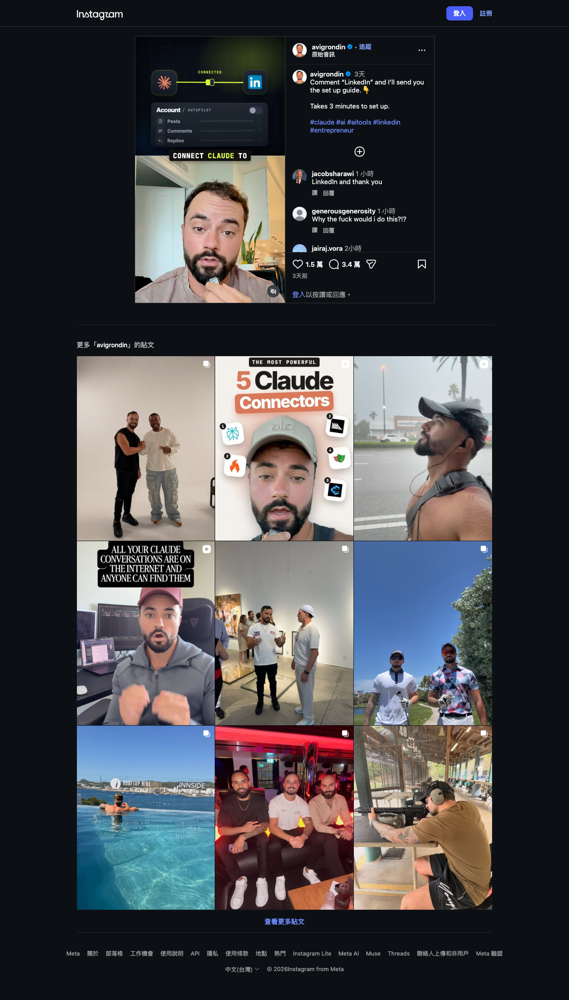
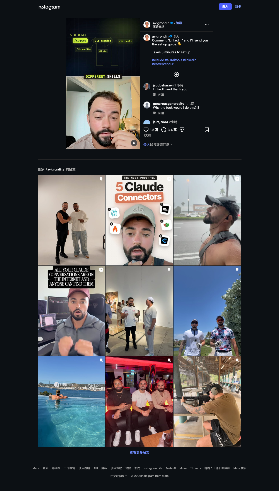
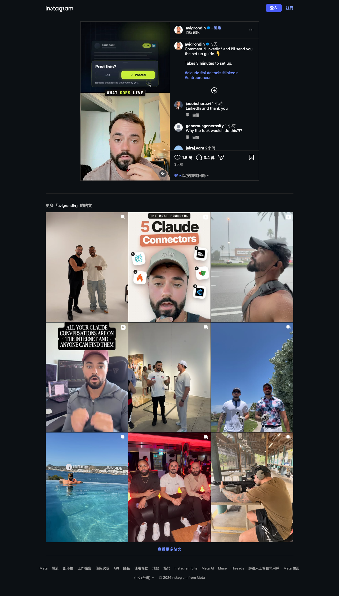

Instagram｜把 Claude 接到 LinkedIn？11 個 Skills、自動化敘事與平台規範邊界
一句話摘要
這支 Reel 提出的是「以 Claude 協助 LinkedIn 工作」的工作流想像，而不是可由影片直接驗證的完整產品規格。最值得保留的設計原則是 **草稿、審閱、再發佈**；最需要避免的是把未揭露實作的「autopilot」誤解成可直接授權帳號自行抓資料、留言、回覆或發文。
Reel 可見內容：哪些是事實、哪些只是示意？
帳號 `avigrondin` 的影片長約 56.3 秒，文案寫「留言 LinkedIn，我會傳設定指南」，並稱設定只要三分鐘。本次以約第 3、10、25、50 秒畫面檢視，並非完整逐字轉錄。
- **約第 3 秒**：畫面寫 `CONNECT CLAUDE TO`，接上 LinkedIn 圖示；另有 `Account / AUTOPILOT`、`Posts`、`Comments`、`Replies`。左側出現橘色圖示但沒有名稱，不能可靠判定是哪一個自動化服務。
- **約第 10 秒**：畫面寫 `// 11 SKILLS`，列出 `/li-post`、`/li-comment`、`/li-reply`、`/li-profile`、`/li-plan` 等命令風格的名稱。影片沒有展示其檔案內容、來源、安裝流程或可操作範圍。
- **約第 25 秒**：`// /LI-PROFILE` 畫面列出 `Headline`、`About`、`Experience`、`Featured` 等個人檔案區段，暗示可協助整理 profile；未看到對真實 LinkedIn 帳號的實際讀寫。
- **約第 50 秒**：畫面呈現 `Post this?`、`Edit`、`Posted` 和 `Nothing gets posted until you say yes.`。這是影片中的人類確認敘事，並非本次獨立驗證的系統行為。



可採用的安全工作流：讓 AI 起草，不讓 AI 無限制代操
不論技術堆疊為何，較穩妥的工作流是把 AI 留在「整理、起草、檢查」階段，把平台行動留給使用者明確批准：
- **輸入最小化**：只提供欲公開的履歷、既有貼文、產品資料與寫作偏好；不要把私訊、客戶名單、未公開營收、登入 Cookie 或長效 token 放入 prompt 或 skills。
- **草稿先行**：用 AI 產出貼文、個人檔案段落、留言建議與回覆選項，但保留完整草稿與來源資料讓人檢查。
- **逐筆確認**：每一則貼文、留言、回覆都以預覽方式呈現，由帳號擁有人逐筆批准；高風險內容（招募、投資、醫療、法律、客訴）應加上第二位審閱者。
- **最小權限**：若工具要求 LinkedIn 權限，逐項確認 OAuth scope、token 保存位置、撤銷方式、是否可讀取私訊／聯絡人／帳號資料，以及是否支援唯讀或草稿模式。
- **可復原與稽核**：保存發佈前版本、最終內容、批准者與時間；設定頻率上限與緊急停止機制，避免錯誤內容大量送出。
LinkedIn 平台規範：自動化不等於已獲允許
LinkedIn 的 User Agreement（本次閱讀之頁面標示 2025-11-03 生效）明確禁止開發、支援或使用 software、devices、scripts、robots 或其他方式，對服務中的 profiles 或其他資料進行 scrape 或 copy。這不等於本文替所有 LinkedIn 自動化逐案做法律判斷，但足以說明：
- 不能僅因影片稱為「autopilot」就假定允許抓取資料、模擬瀏覽器操作或批量互動。
- 應優先評估 LinkedIn 官方 API、獲授權 integration 與目標帳號／方案是否符合相應用途。
- 若工具需輸入 LinkedIn 密碼、匯出 Cookie、安裝不明瀏覽器擴充功能或繞過頻率限制，應停止並改用可審核的官方途徑。
- 第三方工具即使承諾「不會發佈直到你同意」，仍需閱讀它實際的權限請求、網路傳輸、資料保留與撤銷流程。
本次查核界線
影片未公開完整的 setup guide、中介工具名稱、11 個 skills 原文、程式碼、OAuth 授權畫面、資料處理位置或 API 使用方式。因此，本文不宣稱它使用 Claude 的特定產品功能、LinkedIn 官方 API，或已符合 LinkedIn 的所有規範；也不執行影片留言所誘導取得的外部指南。
原始與查核連結
- Instagram Reel：https://www.instagram.com/reel/DeNZCx2uINC/
- LinkedIn User Agreement：https://www.linkedin.com/legal/user-agreement
來源擷取紀錄：`source-archive/2026-10-11-instagram-avigrondin-claude-linkedin-autopilot.json`